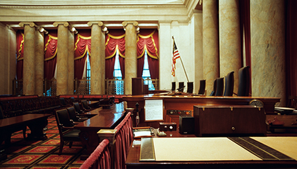

The three branches, how a bill becomes a law, how elections work, and what's happening in the 2026 midterms.
Student Edition · Updated August 27, 2026
This page aims for strict nonpartisanship — see the Resources section for how it's sourced.
Discovery Points:0 pts
Answer quizzes to unlock hidden content
Situation Update
Where Things Stand: The 2026 Midterms Counting Down to Nov 3
Updated August 27, 2026 —
Election Day is November 3, 2026
SpringPrimaries reshuffle Congress — A primary election can end a member's time in Congress just like a general election can. Three sitting members lost their primary this year: U.S. Senators Bill Cassidy of Louisiana and John Cornyn of Texas, and U.S. Representative Thomas Massie of Kentucky. src
2025New maps in several states — States usually only redraw their House districts once every 10 years, right after the census. In 2025, several states redrew them anyway. Texas and California show two different ways this can happen. Texas's legislature passed a new map. A federal court blocked it. Then the Supreme Court said Texas could use the map after all, on April 27, 2026. src California did it differently. Its voters approved a new map themselves, by voting yes on a ballot measure called Proposition 50, on November 4, 2025. src
Aug 2026A high retirement count — As of August 2026, 60 U.S. Representatives have said they won't run for reelection this year. As of July 2026, 11 U.S. Senators had also said they won't. That's one of the biggest retirement waves in decades. src Two of the most senior members of Congress are in that group. Nancy Pelosi, a former Speaker of the House, was first elected in 1987. Mitch McConnell, a Senate Republican leader, was first elected in 1984. src
Nov 3Election Day — Voters decide all 435 House seats and about three dozen governor's races. They also decide 37 Senate seats: 35 regular seats, plus 2 special elections to finish out terms in Florida and Ohio. src
🏛️
Who controls what, as of August 27, 2026?
Here's a plain, dated snapshot of Washington — before any 2026 votes are counted. Republicans hold the presidency. They also hold the majority in the House of Representatives and the majority in the Senate. src
The Speaker of the House is Mike Johnson. He's held the role since October 2023. src The Senate Majority Leader is John Thune. He's held the role since January 2025. src
Section 1 explains these two roles in more detail. In short: the Speaker decides which bills get a vote on the House floor, and the Majority Leader controls the Senate's schedule. That's why it matters so much which party controls each chamber. Whichever party wins the majority picks that chamber's leader. That leader then controls what does, and doesn't, come up for a vote for the next two years.
Think about it
This same fact block would read exactly the same no matter which party held these roles. Why do you think it matters that a civics page describe "who's in charge" as a plain fact, instead of as good news or bad news?
A chamber's exact balance decides how many seats it would take to flip control, so start with the balance. As of August 29, 2026, Republicans hold 218 seats in the House and Democrats hold 212. One seat is held by an independent, and four sit vacant. It takes 218 to have a majority. src In the Senate, Republicans hold 53 seats and Democrats hold 45, with two independents who vote with the Democrats. It takes 51 to have a majority. src Do the subtraction for each chamber and you have the number both parties are working toward on November 3.
Not every seat is equally likely to change hands, though. Nonpartisan election forecasters study each race and rate how competitive it is. One of the most widely used raters is the Cook Political Report. It publishes an updated rating for every House and Senate race. src
Cook's most competitive rating is called "Toss Up." It means either party has a good chance of winning. As of August 20, 2026, Cook rates six Senate races as Toss Up: Alaska, Maine, Michigan, Ohio, Texas, and Iowa. Cook moved Texas and Iowa into Toss Up that week. They had been rated Lean Republican. src As of July 16, 2026, Cook rated 18 House races as Toss Up. Those races were spread across 14 states, including Arizona, California, Iowa, Michigan, New York, Ohio, Pennsylvania, and Texas. On August 25, 2026, Cook moved two more House races — Florida's 14th District and Michigan's 10th District — from Lean Republican to Toss Up. src
These ratings come straight from Cook Political Report's own published lists, current as of the dates above. They are Cook's ratings — not a classroom guess about which races are close.
A historical pattern political scientists have observed
Key Word: Midterm Penalty
Political scientists have studied how the president's party usually does in midterm elections. Going back to 1946, the president's party has lost House seats in 18 of the last 20 midterms. src This comes from UCSB's American Presidency Project, a nonpartisan academic research group.
This is a historical pattern, not a prediction about 2026. It describes how midterms have gone for the last 80 years. Every single election still has its own candidates and its own issues. A historical pattern can't capture those.
The U.S. government has three parts, called branches. Each branch has its own job. This way, no single branch can run the whole government by itself. src
The three branches, left to right, and two ways a law or a judge moves between them. (Read "Check 1" below for what happens if the President disagrees.)
Executive Branch — carries out the laws
The executive branch is led by the President. src The President is one person, and that person's job is to carry out and enforce the laws that Congress makes. src The President is also the head of state and the commander in chief of the U.S. armed forces. src Whoever holds the job, a presidential term lasts 4 years, and the same person can only be elected President two times. src
Legislative Branch — makes the laws
The legislative branch is Congress, and its job is to write and pass the country's laws. src Congress is split into two chambers, or groups: the House of Representatives and the Senate. src
435
House members2-year terms
100
Senators — 2 per state6-year terms
Each state gets a different number of House members depending on its population — states with more people get more House members. src The Senate is different: exactly two from every state, no matter how big or small the state is. src
Key Word: Speaker of the House
The leader of the House of Representatives. The full House votes to choose the Speaker. src One of the Speaker's biggest powers is deciding which bills actually get a vote on the House floor. A bill can't become a law if it never gets a vote. src
Key Word: Senate Majority Leader
The leader of whichever party has more seats in the Senate. That party's members elect this leader. src The Majority Leader controls the Senate's schedule. That means deciding what the Senate spends its time debating and voting on. src
Judicial Branch — explains what the laws mean
The judicial branch is made up of federal courts, including the highest court in the country: the Supreme Court. src This branch's job is to explain what laws actually mean and apply them to real cases. Courts can also decide whether a law breaks the rules set by the Constitution — the country's highest set of rules. If a court rules that a law is unconstitutional, that law can no longer be enforced. src
Question 2
How do elections actually work — and which branches get elected?
You just read about the three branches. Here's a fact that surprises a lot of people: only some of them are filled by election. Two of the three branches are filled by people voters choose, directly or indirectly. One of them isn't elected at all. Here's how each branch actually gets its members.
A ballot drop box near Olympia, Washington, photographed in 2020. Washington is a vote-by-mail state, so drop boxes like this one are how most residents actually cast their ballot. Wikimedia Commons (CC BY-SA 4.0)
Legislative branch — fully elected, most often
Congress gets elected the most often of the three branches. But the House and the Senate don't run on the same schedule. Every House member serves a 2-year term. And the whole House — all 435 seats — is up for election every single time, including every midterm. src Senators serve much longer terms: 6 years each.src But the Senate doesn't elect everyone at once. Senators are split into three equal-ish groups, called "classes." Each class's 6-year term ends two years apart from the other two. So only about a third of the Senate is up for election at any one time — never the whole chamber at once. src
Executive branch — elected, but not by direct national popular vote
The President is elected too. But not the way most people think. There's no single, direct nationwide vote that picks the winner. Instead, the President is chosen through a system called the Electoral College. src Each state gets a number of "electors," based on how many people it sends to Congress. Add them all up, and there are 538 electors in all. A candidate needs more than half — 270 out of 538 — to win the presidency. src
Judicial branch — not elected at all
This branch works differently. Federal judges — including Supreme Court justices — are never elected by voters. Instead, the President picks, or "nominates," someone for the job. Then the Senate has to vote yes before that person can actually start. src Once confirmed, a judge generally keeps the job for life. Why set it up this way? The goal is to let judges rule based on what the law actually says, without worrying about winning votes to keep their job.
Primary elections vs. general elections
Most of these elections actually happen in two rounds. Round one is the primary election, where each political party's own voters pick which candidate will represent that party. src Round two is the general election — the real, final vote, open to any registered voter regardless of party. src
Key Word: Midterm Election
A midterm election is a Congressional election held halfway between two presidential elections — 2 years into a President's 4-year term, and 2 years before the next one. src Every House seat, plus about a third of the Senate, is up for grabs at every midterm. There's just no presidential race on the ballot that year.
Question 3
Why doesn't any one branch have all the power?
The people who designed the U.S. government did not want one branch to get too much power. So they gave each branch tools to limit, or "check," the other two. This system is called checks and balances. src
This branch
can do this
to this branch
🏛️ Executive
veto a bill Check 1
🏢 Legislative
🏢 Legislative
override that veto Check 2
🏛️ Executive
⚖️ Judicial
rule a law unconstitutional Check 3
🏢 Legislative
🏢 Legislative
confirm — or reject — a presidential appointment Check 4
🏛️ Executive
🏢 Legislative
impeach and remove an official Check 5
🏛️ Executive⚖️ Judicial
Five ways the three branches check each other — read below for the full explanation of each.
Check 1: The President can veto a bill
After Congress passes a bill, it goes to the President. The President can veto it. That means refusing to sign it, so it does not become a law. src
Check 2: Congress can override a veto
Congress isn't stuck once a bill is vetoed. The House and the Senate can each vote to pass the bill again. If two-thirds of the House agrees, and two-thirds of the Senate agrees too, the bill becomes a law anyway — no signature needed. src Two-thirds is a high bar on purpose.
Check 3: Courts can rule a law unconstitutional

The courtroom inside the Supreme Court Building, where the nine justices hear cases and can rule a law unconstitutional. Wikimedia Commons (CC BY-SA 3.0)
Even after a law is passed, federal courts can decide whether that law follows the rules in the Constitution. If a court rules a law is unconstitutional, that law can no longer be enforced. This power is called judicial review. src
Key Word: Judicial Review — Marbury v. Madison (1803)
The Constitution never actually says, in plain words, that courts get to strike down laws. That power comes from a Supreme Court case called Marbury v. Madison, decided in 1803. src In that case, the Supreme Court struck down part of a federal law as unconstitutional for the first time ever, setting the rule that courts get the final say on what the Constitution means. src
Check 4: The Senate confirms presidential appointments
The President picks people for certain big jobs, including federal judges, Supreme Court justices, and cabinet secretaries. But the President can't just install them alone. The Senate must vote to confirm each pick before that person can actually take the job.src
Check 5: Congress can impeach and remove an official
Say a President, judge, or other federal official is accused of serious wrongdoing. Congress has a two-step process to remove that person from office. Step one: the House of Representatives can impeach — meaning formally accuse — that official, with a simple majority vote. srcStep two: the Senate holds a trial. To actually convict and remove the official, two-thirds of the senators present must vote guilty.src
Key Word: Checks and Balances
A system where each branch has some power to limit the other two, so no single branch can act without any oversight at all. src Veto, veto override, judicial review, Senate confirmation, and impeachment are five specific tools that make this system work.
Close to Home
Who represents Alderwood?
Every student at this school lives inside a specific set of voting districts — one state legislative district and one U.S. congressional district. Those districts decide which elected officials represent this exact school, and which of their seats are actually on the ballot this year. This section names them, plainly, and shows what's up for election near here in 2026.
The Legislative Building at the Washington State Capitol in Olympia, where the 21st District's state senator and representatives named below do their work. Wikimedia Commons (CC BY-SA 3.0)
This school's districts
Alderwood Middle School sits in Washington's 21st Legislative District and the state's 1st Congressional District. src The 21st Legislative District covers parts of Edmonds, Lynnwood, and Mukilteo. src It also includes Everett. src The 1st Congressional District covers a stretch of King and Snohomish counties, including the Alderwood Manor area this school is named for. src
Washington's 21st Legislative District
Every Washington legislative district elects three people: one State Senator and two State Representatives (Position 1 and Position 2). src The 21st District's current State Senator is Marko Liias. src Its two current State Representatives are Strom Peterson (Position 1) and Lillian Ortiz-Self (Position 2). srcsrc
All three of these seats are up for election in 2026. State Representatives serve 2-year terms, so both House seats are on the ballot every election. src State Senators serve longer, 4-year terms, staggered so only about half the Senate is up every two years. src The 21st District's Senate seat is up this year. src Washington's candidate filing week for 2026 ran through May 8. The statewide primary is August 4, 2026. src
Here's who filed for each of the three seats:
State Senate: Marko Liias (Democratic), Riaz Khan (Republican). src
State Representative, Position 1: Strom Peterson (Democratic), Jason Moon (Democratic). src
State Representative, Position 2: Lillian Ortiz-Self (Democratic), Bruce Guthrie (Libertarian). src
Their own words — candidate platform links
Every filed candidate above gets a link straight to that candidate's own campaign website, in their own words. Each link goes to the candidate's own site — those sites are the place to read what any candidate supports, because only the candidate can speak for their own platform.
The 1st Congressional District's current U.S. Representative is Suzan DelBene. She has represented this district since a 2012 special election. src Every U.S. House seat is up for election every 2 years, with no exceptions. src This seat is one of all 435 House seats nationwide that are on the 2026 ballot.
Seven candidates filed for this seat: Suzan DelBene (Democratic), Benjamin Kincaid (Democratic), Bryce Nickel (Democratic), James Etzkorn (Independent), Hunter Gordon (Democratic), Mary Silva (Republican), and Catherine Hildebrand (Democratic). src
Their own words — candidate platform links
Same rule as above: a link to each candidate's own campaign website, nothing more.
Washington's two current U.S. Senators are Maria Cantwell and Patty Murray. srcNeither seat is up for election in 2026. Section 2 explained that U.S. Senate terms are staggered 6-year terms, so only about a third of the Senate is up in any one election. src Cantwell's current term runs to January 3, 2031, so her seat is next up in 2030. src Murray's current term runs to January 3, 2029, so her seat is next up in 2028. src This is a real, concrete example of a fact from Section 2: not every office is on every ballot, even in a big election year.
Also on the 2026 ballot statewide: judicial races
Five of the nine seats on the Washington Supreme Court are up for election in 2026: Positions 1, 3, 4, 5, and 7. src These races work differently from the ones above. Washington Supreme Court elections are nonpartisan by design — candidates don't run with a party label on the ballot at all. src TVW, Washington's public affairs network, produces a Video Voters' Guide for these races, where candidates explain their own qualifications directly on camera. src
Think about it
Every candidate list above is presented the same way, no matter how many candidates from which party filed. Why might a page like this choose to state a candidate list plainly and let you look at it yourself, instead of pointing out which party has "more" or "fewer" candidates in a particular race?
History
How did voting rights expand over time?
Why does history matter here?
The Constitution didn't start out letting every adult citizen vote. Who could vote has expanded slowly, over nearly 200 years, through amendments and laws. Test yourself along the way to earn points!
May–Sept 1787
The Constitutional Convention
Delegates from almost every state gathered in Philadelphia, originally just to revise the country's first governing document, the Articles of Confederation. src By mid-June they had decided to design an entirely new system of government instead. After months of debate and compromise, 38 delegates signed the finished Constitution on September 17, 1787. src You will also see the number 39. Both are right: one of the 38, George Read, signed a second time for John Dickinson, who was absent that day — so the document carries 39 signatures but only 38 signers. src As written, the Constitution left the question of who could vote mostly up to each individual state — and at the time, most states only allowed white men who owned property to vote.
The 15th Amendment said the right to vote could not be denied "on account of race, color, or previous condition of servitude" — meaning states could no longer legally bar formerly enslaved men and other Black men from voting because of their race. src In practice, enforcement was uneven for decades. Starting in the 1890s, many Southern states used tools like literacy tests and grandfather clauses to keep Black citizens from actually voting, despite the amendment's promise. Literacy tests were finally outlawed by the Voting Rights Act of 1965 — nearly a century later. src
Key Word: Poll tax
A fee some states charged people before they were allowed to vote. Because it fell hardest on poor citizens, it was used for decades to keep many Black voters and poor white voters away from the polls. Poll taxes in federal elections were banned by the 24th Amendment in 1964, and the Supreme Court struck them down in state elections too in 1966.
1920
The 19th Amendment
The 19th Amendment said the right to vote could not be denied "on account of sex" — giving women across the country a constitutional right to vote for the first time. src It was ratified on August 18, 1920, after decades of organizing by suffrage activists. Like the 15th Amendment, its promise wasn't immediate for everyone: discriminatory state voting laws still kept many Black women and other women of color from actually voting for decades afterward. src
Jun 2, 1924
The Indian Citizenship Act
Congress declared all Native Americans born in the United States to be "citizens of the United States." src But citizenship did not come with a ballot. Who could vote was still left to each state — the same rule written back in 1787 — and some states used that rule to keep Native citizens away from the polls anyway. Arizona and New Mexico both barred Native voters until 1948, and the fight went on into the 1950s. src That is the 15th Amendment's pattern happening all over again: the promise arrives first, and the vote arrives later.
Tribal nations are not just part of this history. Washington has 29 federally recognized tribes today, each one a sovereign government. src
Rep. John Lewis, official portrait, 2003. He was beaten while marching for voting rights in Selma in 1965, the same year this law passed. Wikimedia Commons (public domain)
President Lyndon B. Johnson signed the Voting Rights Act to directly enforce the 15th Amendment. src It banned literacy tests, sent federal officials to register voters in places with a history of discrimination, and required certain places to get federal approval before changing their voting rules. By the end of 1965, a quarter of a million new Black voters had registered. src
The 26th Amendment lowered the voting age nationwide from 21 to 18. src It moved through Congress and the states in under four months — the fastest any amendment has ever been ratified — partly driven by the argument that 18-year-olds who could be drafted to fight in the Vietnam War should also be able to vote. src
Hidden History Unlocked
1913 — The 17th Amendment: Before 1913, U.S. Senators weren't elected by voters at all — state legislatures picked them. The 17th Amendment changed that, giving regular voters the direct power to elect their own Senators for the first time. It passed partly because some state legislatures had become gridlocked or corrupt over Senate picks, leaving seats empty for months. src
Bonus
Key people to know
James Madison and John Lewis are history — people whose part in the story is already settled. Sitting officials belong in Where Things Stand, not here.
📜
'">
James Madison
Delegate, Constitutional Convention, 1787
Often called the "Father of the Constitution." His Virginia Plan gave the 1787 Convention its basic framework, and he later sponsored the Bill of Rights — the Constitution's first 10 amendments — as a member of the first House of Representatives.
As a 25-year-old activist, he led marchers across the Edmund Pettus Bridge in Selma, Alabama on "Bloody Sunday," March 7, 1965, where he was beaten by state troopers. The nationwide reaction helped push Congress to pass the Voting Rights Act just months later. He went on to serve 34 years in the U.S. House of Representatives.
Sometimes a video explains things better than words. Here are two good ones — one longer deep-dive and one short overview. You can pause, rewind, or watch with captions on.
Separation of powers, explained (~8 min)
Crash Course Government and Politics walks through why the three branches were designed to check each other, with concrete examples of each branch's power over the others.
What is the Electoral College? (~3 min)
A Utah Valley University political science professor gives a quick rundown of why the Electoral College was created and how it works in presidential elections. Watch this one first if you're new to the topic.
While you watch, think about
What surprised you? What questions do you still have? What do the videos say that matches — or doesn't match — what you just read?
Resources
All sources — dig deeper into what you're curious about
Reading levels
⭐ Easier = great starting point · ⭐⭐ Medium = some reading required · ⭐⭐⭐ Harder = for students who want a deeper challenge
🗓️ Keep up with the 2026 midterms (as of August 27, 2026)
⏳ A dated snapshot, not a permanent resource
This list will get stale as the 2026 midterms move toward Election Day on November 3, 2026. If you're reading this well after August 2026, treat these links as historical background and look for newer coverage instead.